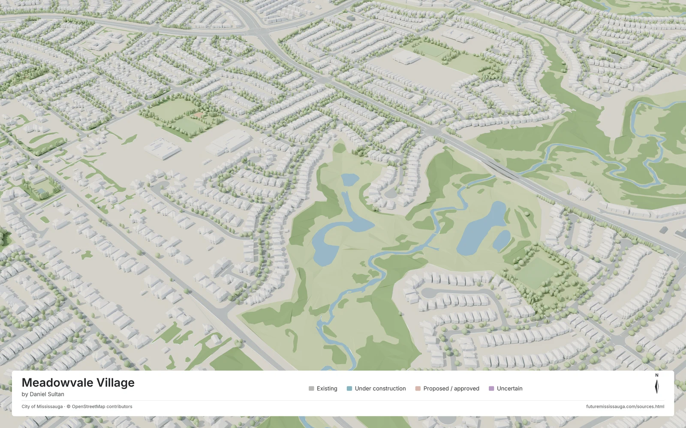

Meadowvale Village in detail
A new neighbourhood view arrived alongside house and podium corrections elsewhere in the city.

What changed
I added Meadowvale Village, repaired stretched house surfaces in Erin Mills and Erindale, and restored the construction podium below Exchange in Downtown. Picture credits, a status key and a camera-correct north arrow made the new views easier to read.
Picture credits and status key
The October 22 image update added clearer status keys and creator credits. Earlier images keep their original dates.
A closer view of Meadowvale Village
The October 22 update added a closer view of Meadowvale Village, with more City-source buildings and mapped surroundings.
The missing base below Exchange
The construction view had a missing section beneath EX2. I restored the shared base from the original model and fitted its lower edge to the map ground. The towers keep their original positions and shapes.
The small ground fit is approximate. This is a dated construction illustration; the model’s finished surfaces do not show the exact state of work on site.
A neighbourhood model correction
I removed a stretched source-model surface in Erin Mills and Erindale and closed the affected house side using its existing outline. That small closure is approximate. Nearby houses also return to their usual pale colour.
Other buildings and transit routes are unchanged. The gallery pictures are being reviewed separately.